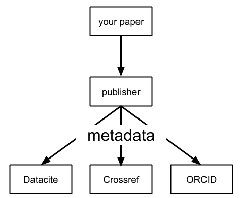

Working with Scholarly Text w/ rOpenSci Tools
Scott Chamberlain (@sckottie)
UC Berkeley / rOpenSci

scotttalks.info/scholtext
LICENSE: CC-BY 4.0
scholarly
text/metadata
What kinds of questions can we ask?
Does number of authors per article increase through time?
Do p-values on average differ by impact factor?
How do length of methods sections change through time?
How does the use of the word ___ vary through time?
How does code sharing vary by journal/discipline/etc.?
scholarly text data flow

rOpenSci Tools
data source specific: rcrossref, rdatacite, rorcid, microdemic, rplos, europepmc, entrez, aRxiv
umbrella tools: fulltext, crminer
extraction tools: pdftools, unrtf, tabulizer, pubchunks, antiword, rtika
ropensci.org/packages
tabulizer example

What's in the pipeline?
making tools better
BUT ...
how open will publishers be moving forward?
full text
metadata, including references
Open Citations!
opencitations.net & I4OC
OCC: Open Citations Corpus
As of March 12, 2018, the OCC has ingested the references from 302,758 citing bibliographic resources and contains information about 12.8 million citation links to 6.5 million cited resources.